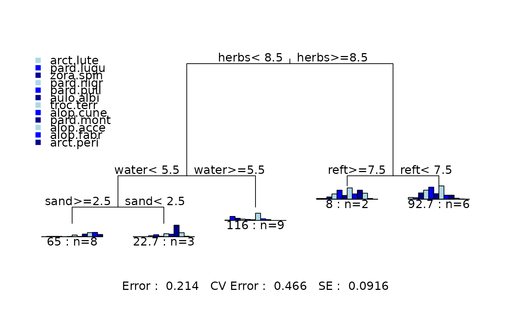
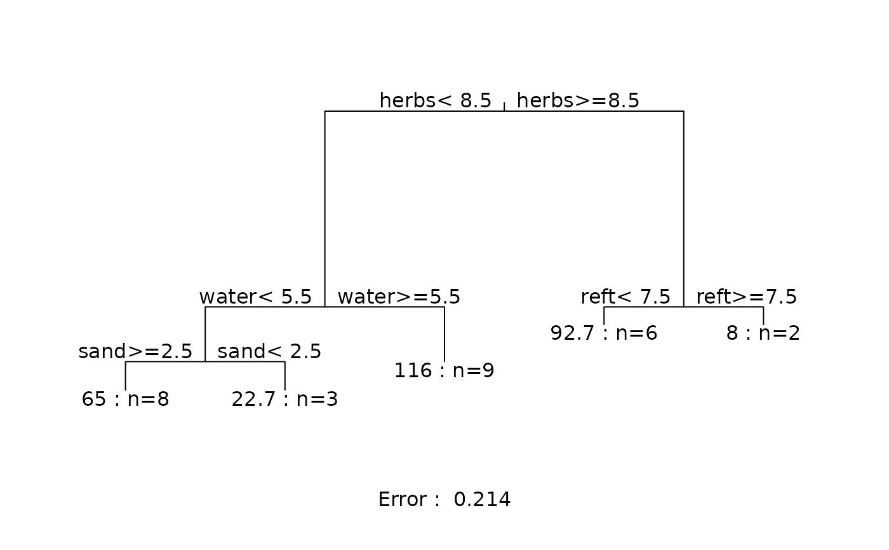
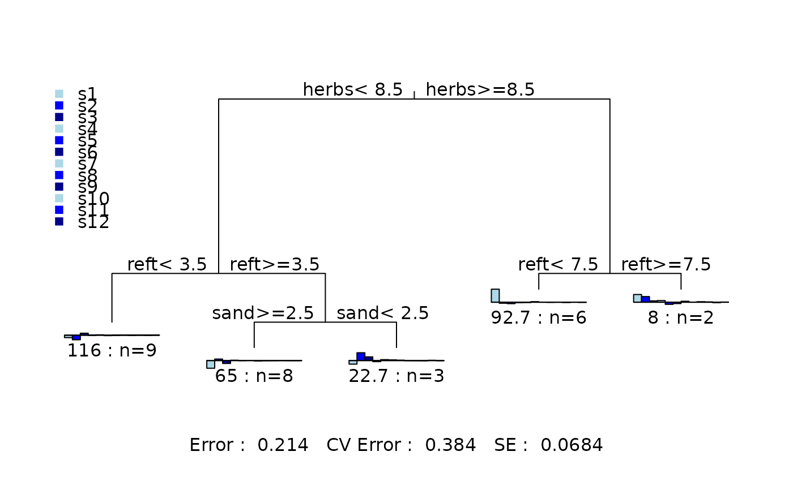

Classical Scaling of Dissimilarity Measures
cmds.diss.RdThe function first computes the dissimilarity matrix according to the specified method –
see gdist or xdiss. The dissimilarities are then
scaled using classical scaling – see cmdscale. The returned matrix can be input into
rpart or mvpart for multivariate regression tree splitting.
Usage
cmds.diss(data, k = ncol(data), x.use = FALSE, zero.chk = TRUE,
plt = FALSE, plot.subset = FALSE, plot.subn = 5, ...)Arguments
- data
Data matrix
- k
Number of vectors to be returned
- x.use
Use extended dissimilarity?
- zero.chk
Check for zero row sums – if zero ignore these rows according to method
- plt
Plot the relationship between the dissimilarities and the distances calculated from the scaled output vectors.
- plot.subset
Plot a subset of the points – useful for large data sets.
- plot.subn
Controls how many points are plotted when
plot.subset=TRUE. The number of points plotted is 750 + N * plot.subn where N = number of rows indata.- ...
arguments passed to either
xdissorgdist
Details
The function knows the same dissimilarity indices as gdist.
Plotting the relationship between the dissimilarities and the distances calculated
from the scaled output vectors is useful in assessing potential loss of information.
If the loss is high then the results from partitioning directly from the dissimilarity
matrix using distance-base partitioning (see dist in rpart),and those
obtained from partitioning the output of cmds.diss using multivariate regression trees
(see mrt in rpart) can be substantial.
Examples
data(spider)
dist.vecs <- cmds.diss(spider)
#> Warning: only 16 of the first 18 eigenvalues are > 0
# comparing splitting using "dist" and "mrt" methods
# for euclidean distance the answers are indentical :
# first using "mrt" on the data directly
mvpart(data.matrix(spider[,1:12])~water+twigs+reft+herbs+moss+sand,
spider,method="mrt",size=5)

# now using "dist" -- note we need the full distance matrix squared
mvpart(gdist(spider[,1:12],meth="euc",full=TRUE,sq=TRUE)~water+twigs
+reft+herbs+moss+sand,spider,method="dist",size=5)

# finally using "mrt" from the scaled dissimilarities.
mvpart(cmds.diss(spider[,1:12],meth="euc")~water+twigs+reft
+herbs+moss+sand,spider,method="mrt",size=5)

# try with some other measure of dissimilarity
# eg extended bray-curtis -- the result will differ
# between methods